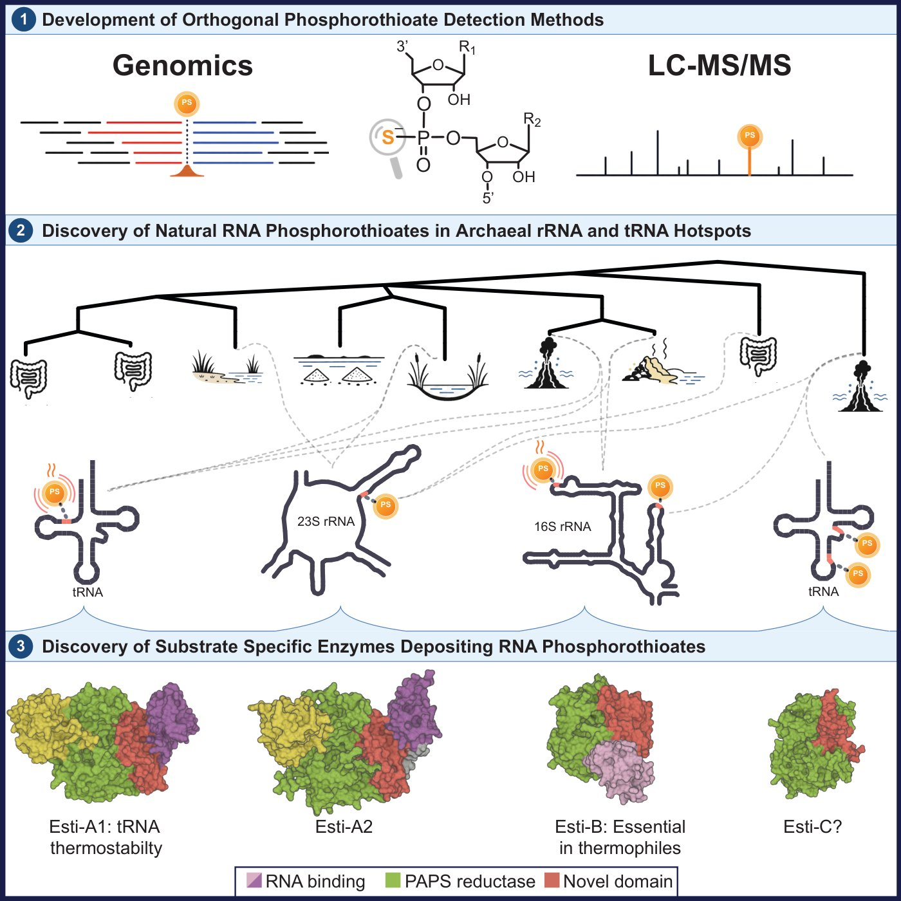

Schwartz Lab · Weizmann Institute of Science
Discovery of RNA phosphorothioate modifications in anaerobic and thermophilic archaea
A dynamic backbone modification coupled to environmental conditions
Maman et al. · Accepted, Cell (2026)

- Paper Link to the published article on Cell's website — this row will be updated automatically once the paper is published.
- Poster Full-quality PDF (5.9 MB, as printed)
- Poster — low resolution Smaller PDF (1.8 MB, quicker on mobile)
- CV Alexander Maman — CV (PDF) (143 KB)
- Contact alex.a.maman@gmail.com